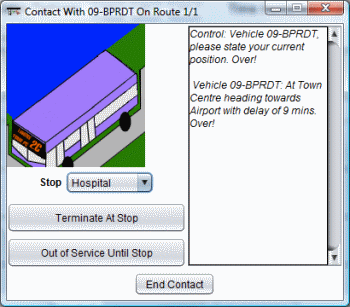

There are two main options on the Make Contact screen. The first option is to request that the vehicle terminates at a stop earlier than the normal terminus. To use this option, choose the Stop where you want the vehicle to terminate and then click on the "Terminate at Stop" button. This will reduce the vehicle's delay but cause a temporary decrease in Passenger Satisfaction (since some passengers did not receive a service). This option is generally more effective than the Out of Service option. Once the vehicles reaches that stop, it will start its next service from that stop and not service any of the stops before it.
Alternatively, you can choose to put the vehicle out of service for a few stops. The vehicle will go about 50% quicker on that part of the route which will reduce your vehicle delay but also impact on passenger satisfaction. To use this option, choose the Stop where you want the vehicle to re-enter service and click on the "Out of Service until Stop" button.
When you are finished making contact with the vehicle, please click "End Contact" and the Control Screen will appear on screen.